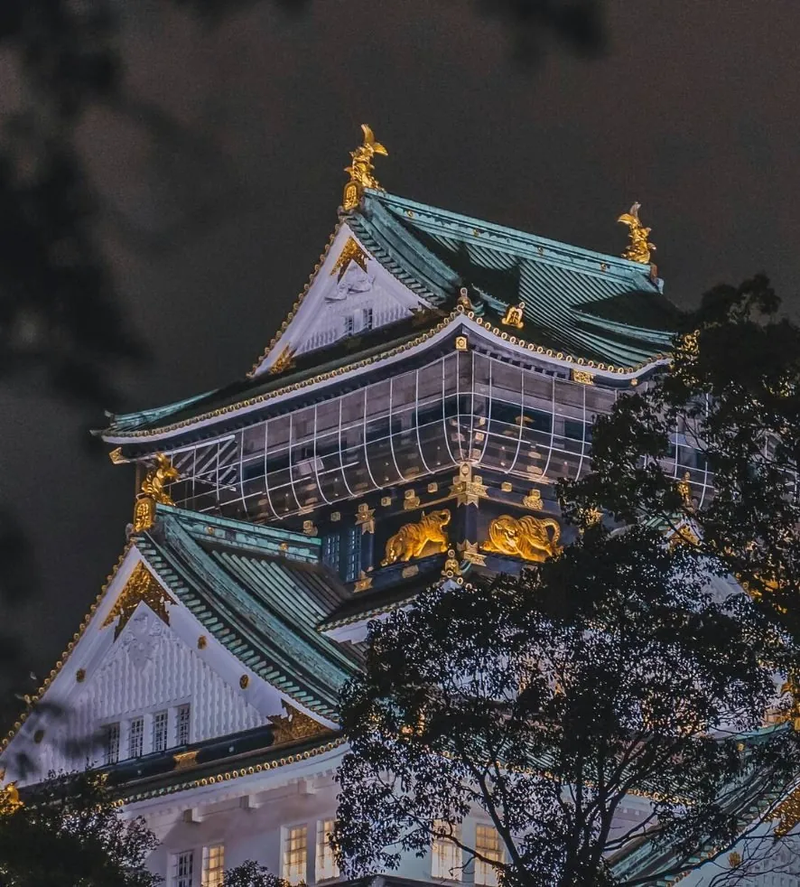
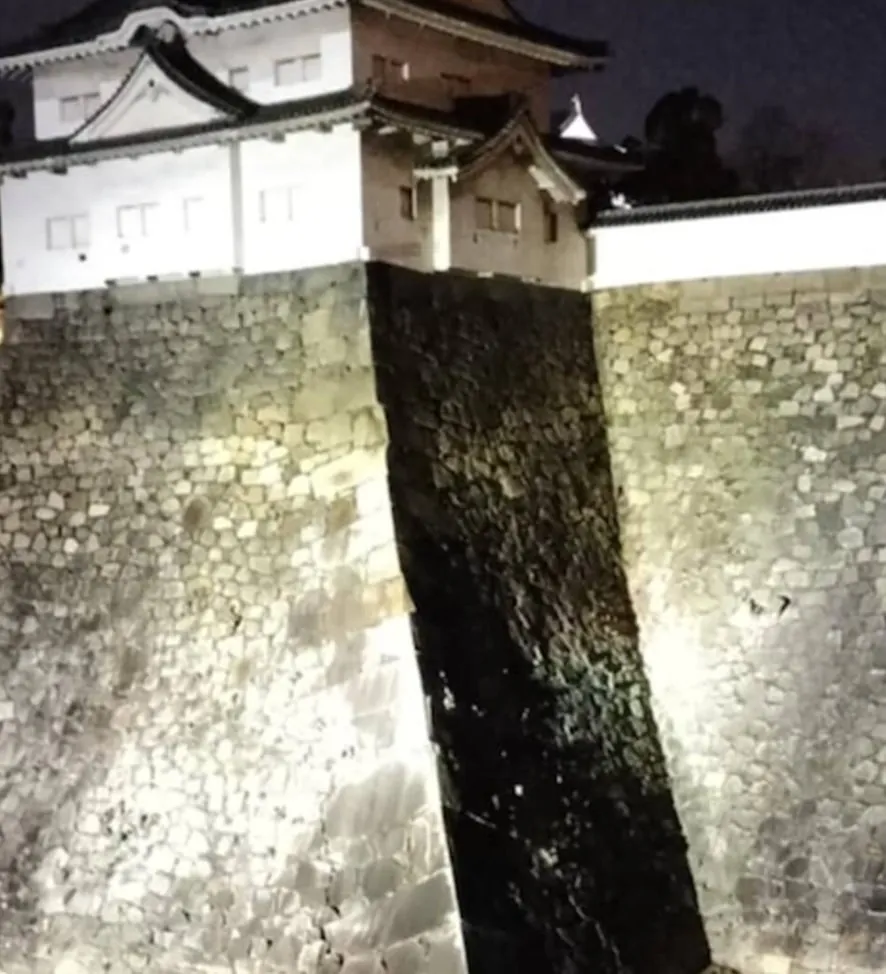
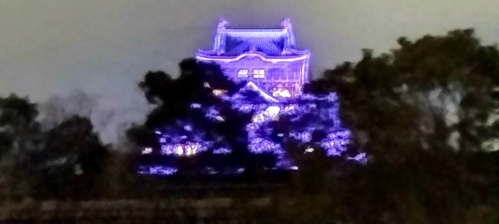
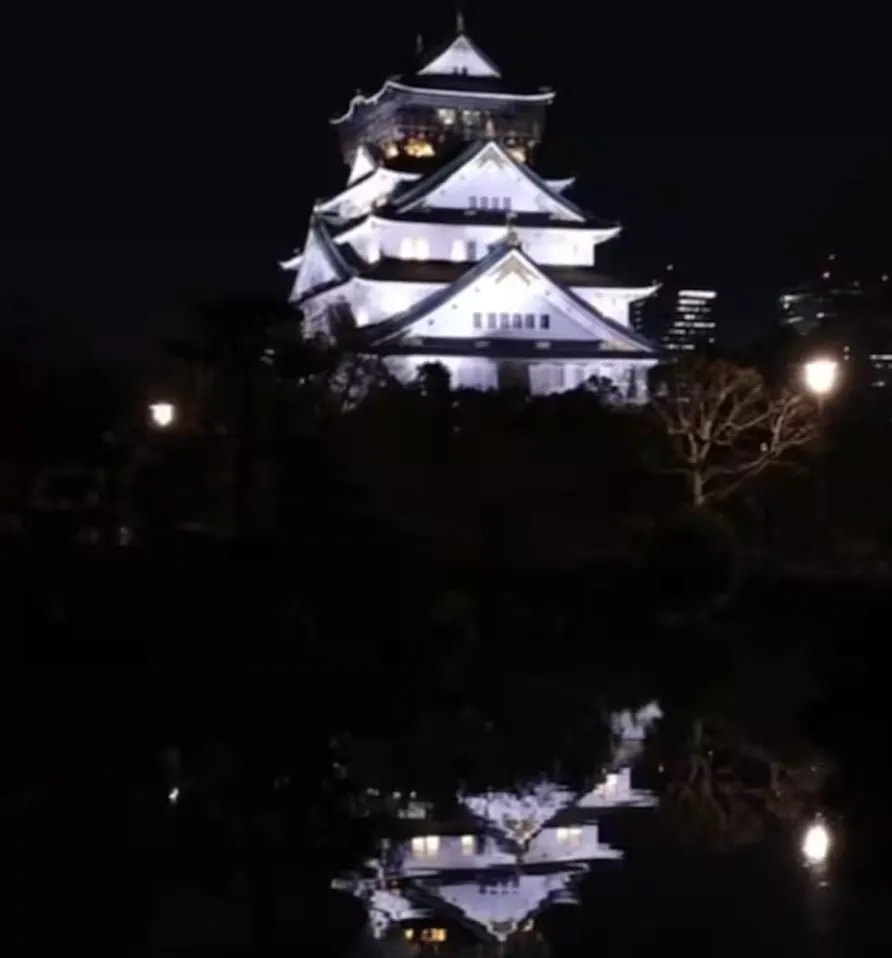

Best Osaka Castle Photo Spots

Osaka Castle is one of Japan’s most photographed landmarks — the white keep rising over the moat is instantly recognisable. What’s less obvious is that the best angles are surprisingly easy to reach, even for phone photographers. Here’s where to stand for the classic shot, the best times of day, and what to do during cherry blossom season. Then, further down, a photographer’s guide to capturing the castle after dark.
The Best Photo Spots & Viewpoints
Most of the famous postcard shots come from the west side of the castle, where the keep is framed against the sky. From east to west, the best spots are:
- Nishinomaru Garden—the classic postcard view from the west, with the keep rising over lawns and (in spring) a sea of cherry blossom. A small entry fee applies; it’s the best spot at golden hour.
- Inner Moat, West Side—free and gorgeous — the moat’s still water gives perfect reflections of the white keep. Best before the sun gets too high.
- Otemon Gate & the Main Approach—a straight, symmetrical view down the approach toward the keep’s central tower; framed by the stone walls on both sides.
- The South Ramparts—the keep seen over the massive original stonework — the fortress-scale walls are at their most dramatic here, especially in late-afternoon light.
- Sakuramon Gate—the stone bridge and gatehouse frame the keep neatly; good for a wide shot with moat water in the foreground.
- East Lawn of Osaka Castle Park—a relaxed, unobstructed view of the keep from the park side, popular with locals; good in morning light.
- Business Park Skyline—step back to the OBP towers for the classic “castle against the modern city” shot, best at blue hour.
Sakura Season & the Best Time of Day
Cherry blossom usually peaks from late March to early April. The single most photographed view in Osaka is the keep seen through the blossom in Nishinomaru Garden, and the castle is also illuminated after dark during the season. The park’s lawns are full of picnic spots and are free to enter.
For light, aim for the golden hour before sunset from the west (Nishinomaru Garden), when the white keep glows against a warm sky. Morning light works best from the east side of the park. After dark the castle is floodlit until around 21:00 in most seasons — head to the west moat for the classic illuminated reflection shot. Winter offers the clearest skies; summer brings dramatic thunderclouds if you’re lucky.
After Dark: A Photographer’s Guide
Once the sun sets and the keep lights up, the castle becomes a different subject. These four ways of seeing it — drawn from Japanese art traditions — each ask for different phone settings. Pick the mood you want, then follow its tips.



Before You Go
Planning the practical side of the visit? Read our guide to Osaka Castle tickets, prices and queues, or see how the castle compares to its famous rival in Osaka Castle vs Himeji Castle.
After the photos, walk the history behind every stone you framed.
Walk with a historian who lives beside it. Small groups. Osaka Castle every day • English • Max 6 guests
Explore the Tours Call / Text Edward WhatsApp EdwardLast updated: September 2026
Edward Iftody — Osaka Castle’s Resident Historian